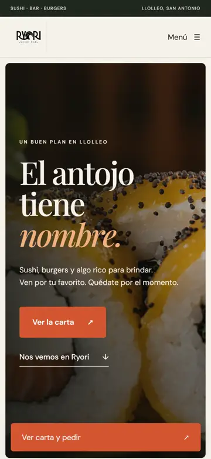
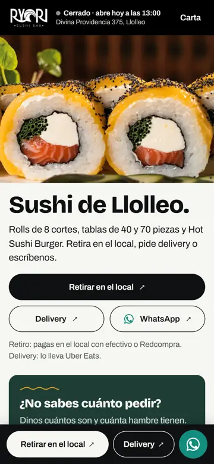
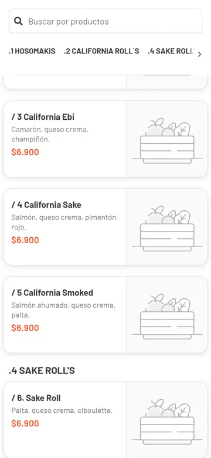
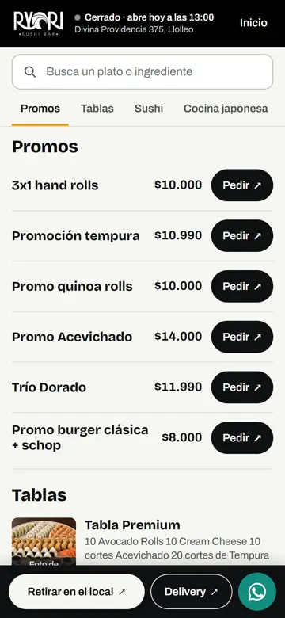

Que pedir Ryori sea tan fácil como comerlo.
Ryori ya tiene lo difícil: clientes que vuelven, buenas notas y una carta con identidad propia. Proponemos un sitio que lleve a cada persona, en un toque, a retirar, pedir delivery o escribir por WhatsApp.
Ver la demo en el teléfonoLectura: menos de 3 minutos
Dónde está Ryori hoy
- 4,4 ★en Uber Eats, con más de 500 valoraciones
- 4,1 ★en Google Maps, con 432 reseñas
- 3 canalesretiro con Fudo, delivery con Uber Eats y WhatsApp
Fuentes: Uber Eats y Google Maps, revisados el 12-10-2026.
La gente ya los elige. Falta que el sitio lo muestre: el anterior no enlazaba el delivery y repetía la carta de Fudo.
Tres datos que ordenaremos juntos
- Dirección: Fudo y Uber Eats dicen Divina Providencia 375; Tripadvisor y Waze, 391.
- Hora de apertura: 13:00 en Fudo; 12:30 en Google y Uber Eats.
- Google: una segunda ficha «cerrada temporalmente», con 2,4 ★, confunde a quien busca «Ryori».
Fuentes: Fudo, Uber Eats, Google Maps, Tripadvisor y Waze, 12-10-2026.
Antes y ahora, en el teléfono




Capturas propias en un teléfono, 12-10-2026. Fudo sigue cobrando: el sitio lleva directo a cada producto.
Lo que cambia, medido
- 3,1 s2,0 shasta ver la foto principal en un teléfono con internet lento
- 3 toques1 toquedesde la portada hasta pedir la Tabla Parque DYR
- sin enlace1 toquepara pedir delivery, desde la primera pantalla
- 32.750 px5.884 pxde alto de la sección Sushi: de unas 39 pantallas a 7
Medido el 12-10-2026 con Chrome en un teléfono emulado (390 × 844 px, red de 1,6 Mbps, 150 ms, procesador ×4). Toques contados en cada versión del sitio, sin contar deslizar la pantalla.
Qué incluye
- Sitio con la identidad de Ryori: la ola del logo, «abierto o cerrado» y lo más pedido con datos reales.
- Carta conectada a Fudo: precios leídos del sistema que ya usan, sin copiar nada a mano. Con buscador, piezas y alérgenos.
- Retirar, Delivery y WhatsApp en cada pantalla.
- Sugeridor «¿Cuánto pedimos?»: dicen cuántos son y cuánta hambre tienen, y reciben el pedido armado para enviar por WhatsApp. Probarlo.
- Medición sin cookies: cuántos tocan Retirar, Delivery o WhatsApp, y desde dónde.
- Fotos reales de los 26 platos destacados, en una sesión en el local.
- Ficha de Google ordenada: datos corregidos y duplicado resuelto.
Lo que necesitamos de Ryori
- El logo en archivo vectorial (AI, PDF o SVG).
- Confirmar dirección, horario y teléfonos.
- Decidir si toman pedidos por WhatsApp y quién responde.
- Una mañana o tarde para la sesión de fotos en el local.
- Acceso de administrador a la ficha de Google Maps.
Etapas y plazos
- Semana 1: confirmamos datos, aplicamos el logo y revisamos juntos la demo.
- Semana 2: sesión de fotos en el local.
- Semana 3: lanzamiento con dominio propio, Google y medición activa.
- Mes 2: primer informe de visitas y pedidos por canal.
Plazos estimados; los trámites de Google pueden tardar más.
Para una segunda etapa
- Mapa «Las tablas de Llolleo»: cada tabla como un punto de la costa.
- QR en mesas y bolsas que abre la carta.
- Lista de difusión de WhatsApp para promos.
Inversión
[PRECIO A DEFINIR]
Incluye todo lo de «Qué incluye». Los extras de segunda etapa se cotizan aparte.
Ver la demo